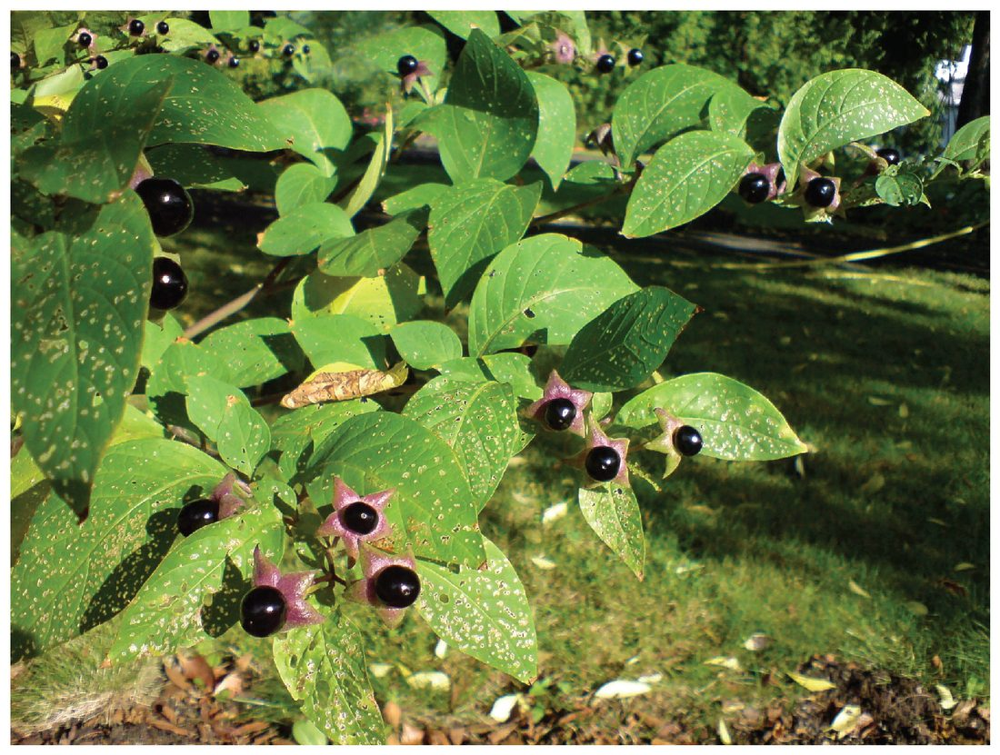

The autonomic nervous system uses just two main transmitters, acetylcholine and norepinephrine, yet it can speed one organ and slow another at the same moment. The difference lies in the receptor proteins. This page sorts autonomic neurons into cholinergic and adrenergic, then works through the receptor proteins every A&P course asks about: nicotinic and muscarinic for acetylcholine, and the alpha and beta adrenergic receptor proteins (alpha-1, alpha-2, beta-1, beta-2) for norepinephrine and epinephrine. It ends with an effects-by-organ table and the drugs that act on each class of receptor protein.
One transmitter, opposite effects
Norepinephrine released onto a small artery in your skin makes its smooth muscle contract, and the vessel narrows. The same norepinephrine released onto your heart makes it beat faster. Acetylcholine from the vagus nerve slows your heart, and acetylcholine from the same nerve makes your stomach wall churn harder.
A transmitter carries no instruction of its own. The response depends on which receptor protein the target cell carries, and on what that receptor protein switches on inside the cell. That one rule explains almost everything on this page, including how most autonomic drugs work.
Cholinergic and adrenergic neurons
Autonomic neurons are named for the transmitter they release:
- Cholinergic neurons (chol- = bile, where choline was first found; erg- = work) release acetylcholine (ACh).
- Adrenergic neurons (from adrenaline, the other name for epinephrine) release norepinephrine (NE; also called noradrenaline). Norepinephrine is epinephrine without one small methyl group; "nor-" is the chemist's prefix for that parent form.
Now place those on the two-neuron chain from the last topic (Figure 1):
- Every preganglionic neuron, in both divisions, is cholinergic. It releases ACh onto the postganglionic neuron in the ganglion, and onto the chromaffin cells of the adrenal medulla.
- Every parasympathetic postganglionic neuron is cholinergic. It releases ACh onto the target organ.
- Most sympathetic postganglionic neurons are adrenergic. They release NE onto the target.
- The exception: sympathetic postganglionic neurons to the eccrine sweat glands are cholinergic. They release ACh, even though they belong to the sympathetic division.
- The adrenal medulla releases mostly epinephrine, with some NE, into the blood, where it acts as a hormone on the same adrenergic receptor proteins.
Release and removal
You saw in the last topic that postganglionic axons release transmitter from varicosities strung along their length (Figure 2). An action potential reaching a varicosity opens voltage-gated calcium channels, and calcium entry triggers exocytosis of transmitter vesicles, exactly as at any chemical synapse. The transmitter then diffuses across a gap wider than a typical synaptic cleft and reaches many smooth muscle or gland cells at once.

How each signal ends sets how long it lasts:
- ACh is split within milliseconds by acetylcholinesterase, the same enzyme you met at the neuromuscular junction.
- NE is mainly taken back up into the varicosity that released it (reuptake), then reloaded into vesicles or broken down by enzymes. Its effect lasts a little longer than that of ACh.
- Epinephrine from the adrenal medulla circulates in the blood until the liver and other tissues clear it, over a few minutes. Its effects last longest.
Nicotinic receptor proteins in the ganglia
Tobacco's nicotine activates one family of ACh receptor proteins, so they are called nicotinic receptor proteins. You met one type at the neuromuscular junction. A different type sits on the cell bodies of every postganglionic neuron, sympathetic and parasympathetic, and on the chromaffin cells of the adrenal medulla.
A nicotinic receptor protein is a ligand-gated ion channel: it is ionotropic. When ACh binds, the channel opens, sodium ions rush in, and the postganglionic neuron depolarizes within about a millisecond. Nicotinic signaling is therefore fast and always excitatory. The ganglionic type differs in its subunits from the muscle type, so some drugs block one without the other. Muscle relaxants used in surgery block the muscle type and leave the autonomic ganglia working.
Muscarinic receptor proteins on the targets
Muscarine, a toxin first isolated from the fly agaric mushroom, activates the other family of ACh receptor proteins, the muscarinic receptor proteins. They sit on every target of parasympathetic postganglionic neurons, and on the eccrine sweat glands.
A muscarinic receptor protein is a G protein–coupled receptor: it is metabotropic. ACh binding activates a G protein inside the cell, which then opens or closes channels or changes second messengers. Different muscarinic subtypes couple to different G proteins, so muscarinic signaling can excite or inhibit:
- On the heart's pacemaker tissue, muscarinic receptor proteins open potassium channels. Potassium leaks out, the cells hyperpolarize, and they take longer to reach threshold, so the heart rate falls.
- On smooth muscle of the stomach and intestines, and on glands, a different muscarinic subtype raises calcium inside the cell. The muscle contracts harder and the glands secrete more.
Because it works through a G protein, muscarinic signaling is slower to start and lasts longer than nicotinic signaling.
| Nicotinic receptor protein (autonomic) | Muscarinic receptor protein | |
|---|---|---|
| Binds | ACh (and nicotine) | ACh (and muscarine) |
| Where | All postganglionic neurons of both divisions; adrenal chromaffin cells | All parasympathetic targets; eccrine sweat glands |
| Type | Ionotropic: a ligand-gated ion channel | Metabotropic: a G protein–coupled receptor |
| Speed | Fast, about a millisecond | Slower, lasting longer |
| Effect | Always excitatory | Excitatory or inhibitory, by subtype |
| Classic blocker | Ganglion-blocking drugs (rarely used now) | Atropine |
Adrenergic receptor proteins: alpha and beta
NE and epinephrine bind two families of adrenergic receptor proteins, alpha and beta, each with subtypes. All of them are G protein–coupled. What sets them apart is the second messenger each one changes, and so the response.
Alpha-1
Alpha-1 receptor proteins raise calcium inside smooth muscle cells, and the muscle contracts. Alpha-1 usually means "smooth muscle contracts."
- Small arteries in the skin, the digestive organs, the kidneys and resting skeletal muscle constrict (vasoconstriction).
- The radial dilator muscle of the iris contracts, so the pupil widens (mydriasis).
- Sphincter muscles at the outlet of the bladder and along the gut tighten.
- The arrector pili muscles contract, and your hair stands up.
Alpha-2
Alpha-2 receptor proteins lower cyclic AMP. Many sit on the adrenergic varicosity itself. NE released into the gap binds them and cuts further NE release: a local negative feedback loop. Alpha-2 receptor proteins in the brainstem also reduce sympathetic output from the CNS as a whole.
Beta-1
Beta-1 receptor proteins raise cyclic AMP. Beta-1 means "heart." In the heart's pacemaker tissue they make the cells reach threshold sooner, so the heart rate rises. In heart muscle they let more calcium in, so each contraction is stronger.
Beta-2
Beta-2 receptor proteins also raise cyclic AMP, but in smooth muscle that makes the muscle relax. Beta-2 usually means "smooth muscle relaxes."
- Smooth muscle in the walls of the small airways relaxes, so the airways widen.
- Small arteries in skeletal muscle dilate when epinephrine reaches them (vasodilation), partly offsetting the constriction driven by their nerves.
- Liver cells break glycogen down and release glucose into the blood.
Most beta-2 receptor proteins are not reached by any sympathetic varicosity. They respond mainly to epinephrine arriving in the blood, because NE binds beta-2 only weakly. That is why the adrenal medulla matters so much for widening the airways.
| Norepinephrine | Epinephrine | |
|---|---|---|
| Main source | Sympathetic postganglionic varicosities | Adrenal medulla, into the blood |
| Acts as | A neurotransmitter, on cells next to a varicosity | A hormone, on cells throughout the body |
| Alpha receptor proteins | Strong | Strong |
| Beta-1 receptor proteins | Strong | Strong |
| Beta-2 receptor proteins | Weak | Strong |
| How the signal ends | Reuptake into the varicosity, in about a second | Cleared from the blood over minutes |
Autonomic receptor proteins and their effects, organ by organ
Most organs in the chest and abdomen receive fibers from both divisions. Which receptor protein sits on each organ determines what each division does to it. Read the table across: for each organ, the sympathetic response and its receptor protein, then the parasympathetic response and its receptor protein.
| Organ or tissue | Sympathetic (NE or epinephrine) | Parasympathetic (ACh) |
|---|---|---|
| Heart rate | Faster (beta-1) | Slower (muscarinic) |
| Force of heart contraction | Stronger (beta-1) | Little direct effect on the pumping muscle |
| Small arteries of skin, gut and kidneys | Constrict (alpha-1) | No fibers |
| Small arteries of skeletal muscle | Constrict with NE from nerves (alpha-1); low levels of circulating epinephrine dilate them (beta-2) | No fibers |
| Smooth muscle of the small airways | Relaxes, airways widen (beta-2) | Contracts, airways narrow; more mucus (muscarinic) |
| Pupil | Widens: dilator muscle contracts (alpha-1) | Narrows: circular muscle contracts (muscarinic) |
| Stomach and intestine wall | Movement and secretion slow (alpha and beta) | Movement and secretion speed up (muscarinic) |
| Gut and bladder sphincters | Tighten (alpha-1) | Relax (mainly nitric oxide released by parasympathetic and gut-wall neurons) |
| Bladder wall | Relaxes (mainly beta-3) | Contracts, emptying the bladder (muscarinic) |
| Eccrine sweat glands | Sweat (muscarinic, from cholinergic sympathetic fibers) | No fibers |
| Glands that make saliva | Small volume of thick, protein-rich saliva (mainly beta-1, some alpha-1) | Large volume of watery saliva (muscarinic) |
| Liver | Breaks glycogen down and releases glucose (beta-2) | No major effect |
| Adrenal medulla | Releases epinephrine (nicotinic, from preganglionic fibers) | No fibers |
Two patterns are worth memorizing. Alpha-1 and beta-2 often sit on smooth muscle in the same organ and pull in opposite directions; which one wins depends on the tissue and on whether NE or epinephrine is doing the binding. And sweating is the famous oddity: a sympathetic response carried by ACh on muscarinic receptor proteins.
Drugs that act on autonomic receptor proteins
Because the response belongs to the receptor protein, a drug that binds one class of receptor protein reproduces or blocks one slice of autonomic control. Two words describe what a drug does once bound:
- An agonist (agon- = contest, struggle) binds and activates the receptor protein, mimicking the natural transmitter.
- An antagonist (ant- = against) binds without activating it, and blocks the natural transmitter from binding.
Drugs are also grouped by the division whose effects they copy or cancel. A sympathomimetic drug (mimet- = imitate) mimics sympathetic effects; a sympatholytic drug (lyt- = loosen, undo) blocks them. A parasympathomimetic drug mimics parasympathetic effects; an anticholinergic drug blocks ACh, in practice usually at muscarinic receptor proteins.
| Drug or class | Receptor protein and action | Main effects |
|---|---|---|
| Beta blocker (metoprolol mostly beta-1; propranolol beta-1 and beta-2) | Beta antagonist; sympatholytic | Slower heart rate, weaker contraction, lower blood pressure. Propranolol can also narrow the airways. |
| Albuterol | Beta-2 agonist; sympathomimetic | Airway smooth muscle relaxes, airways widen. Side effects: shaky hands and a faster heart rate. |
| Epinephrine (injected) | Alpha and beta agonist | Vessels constrict (alpha-1), the heart speeds and strengthens (beta-1), airways widen (beta-2). The emergency drug for a severe allergic reaction. |
| Phenylephrine | Alpha-1 agonist | Vessels constrict: as a nasal spray, shrinks swollen nasal lining; raises blood pressure; eye drops widen the pupil. |
| Prazosin | Alpha-1 antagonist | Vessels dilate, blood pressure falls; dizziness on standing, especially after the first dose. |
| Clonidine | Alpha-2 agonist in the brainstem | Less sympathetic output overall; blood pressure falls. |
| Atropine | Muscarinic antagonist; anticholinergic | Faster heart rate, wide pupils, dry mouth, dry skin, slowed gut, difficulty emptying the bladder. |
| Pilocarpine | Muscarinic agonist; parasympathomimetic | Pupil narrows (used for glaucoma); more saliva (used for dry mouth). |
| Nicotine | Nicotinic agonist in all autonomic ganglia and the adrenal medulla | Stimulates both divisions at once; in smokers, faster heart rate and constricted vessels dominate. |
Atropine comes from deadly nightshade (Figure 3). Its species name, belladonna, means "beautiful woman": drops of the plant's juice were once used to widen the pupils for a striking look.

Common mix-ups
- "Sympathetic stimulates and parasympathetic inhibits." Each division excites some organs and inhibits others. The parasympathetic division speeds the gut; the sympathetic division relaxes the airways. The receptor protein decides.
- "All sympathetic neurons release NE." Every sympathetic preganglionic neuron releases ACh, and so do the postganglionic neurons to eccrine sweat glands.
- "Nicotinic receptor proteins are only on skeletal muscle." A separate type sits in every autonomic ganglion, which is why nicotine affects the heart and blood vessels.